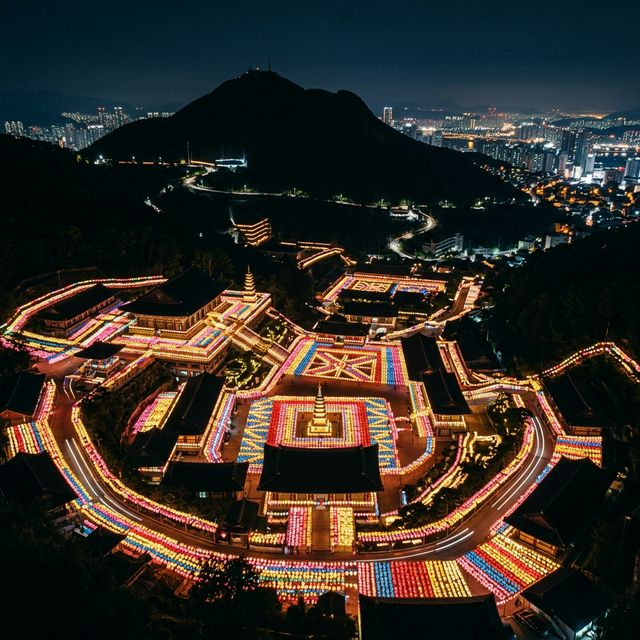
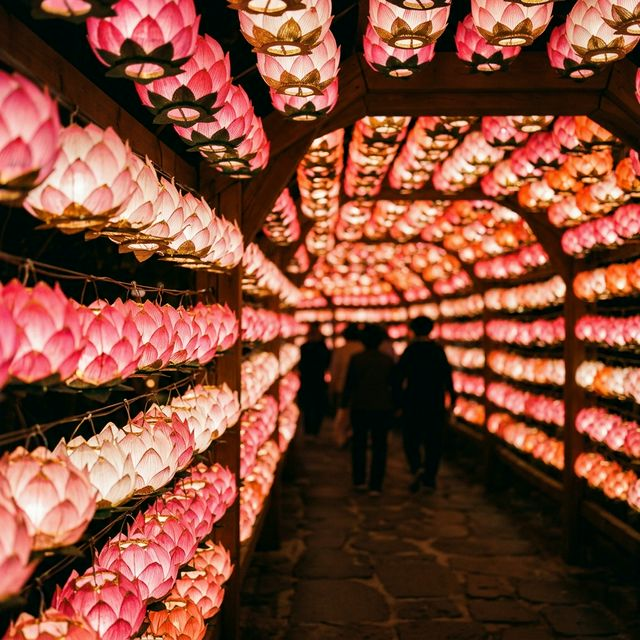
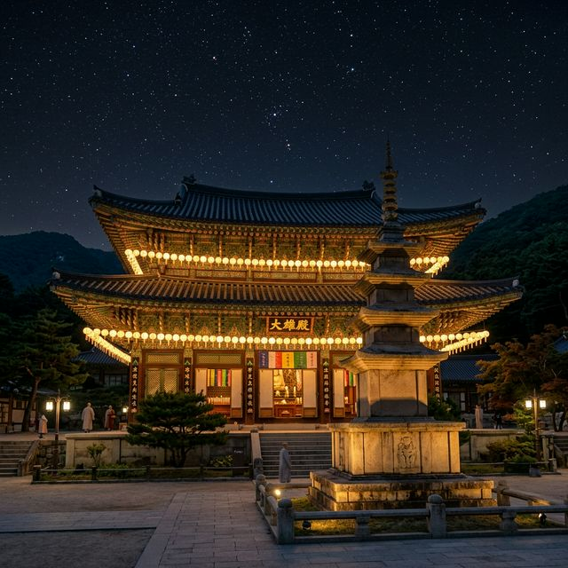

부산 삼광사 연등축제
2026 미리보기 — CNN이 극찬한 '빛의 바다' 야경 명당 총정리
"수만 개의 연등이 빚어내는 환상적인 밤, 부산의 자부심 삼광사를 걷다"
어둠이 짙게 내려앉은 부산 백양산 자락, 낮 동안 정적을 유지하던 거대한 사찰 경내가 일순간 수십만 개의 오색 연등으로 화려하게 타오릅니다. 미국 CNN이 선정한 '한국에서 가장 아름다운 곳 50선'에
당당히 이름을 올린 부산 삼광사 연등축제가 2026년 봉축 기간을 맞이해 그 어느 때보다 압도적인 규모와 화려한 디자인으로 우리를 초대합니다. 단순히 종교적인 의미를 넘어, 전 세계 여행객들을 매료시킨
이 광활한 '빛의 바다'는 보는 이의 숨을 멎게 할 만큼 경이로운 시각적 충격을 선사합니다.
축제 기간 삼광사를 찾는 것은 마치 온 우주의 별빛이 지상으로 내려앉은 듯한 신비로운 우주를 탐험하는 것과 같습니다. 사찰의 고풍스러운 지붕 곡선과 형형색색의 연등이 만들어내는 절묘한 조화는, 왜
이곳이 매년 수많은 사진 작가와 연인들의 성지로 꼽히는지 그 이유를 단번에 깨닫게 해줍니다. 은은하게 들려오는 풍경 소리와 산들바람에 실려 온 풀향기, 그리고 평온을 기원하는 사람들의 나직한 소망이
어우러지는 이 밤은 여러분의 2026년 봄을 가장 아름답게 수놓을 소중한 페이지가 될 것입니다.

[ 백양산 자락을 수놓은 수만 개의 연등 바다 / AI 제작 이미지
]
1. 2026 삼광사 연등축제 봉축 및 점등 일정
부처님 오신 날을 기리는 2026년 봉축 행사는 삼광사의 오랜 역사 속에서도 기술적 완성도와 미적 감각이 최고조에 달한 해로 기록될 것입니다. 사찰의 공식적인 시작을 알리고 수만 개의 연등에 생명을 불어넣는
'봉축 점등식'은 2026년 5월 15일(목) 오후 7시에 거행됩니다. 이 순간부터 부처님 오신 날인 5월 24일까지 약 20일 동안, 삼광사는 24시간 내내 멈추지 않는 감동의
현장이 됩니다. 다만 일 년 중 가장 화려한 빛을 감상할 수 있는 시기인 만큼, 인파가 몰려드는 피크 타임을 전략적으로 고려한 방문 계획이 필수적입니다.
연등의 불빛이 가장 선명하고 아름답게 빛나는 시간은 매일 일몰 직후인 오후 7시경부터 익일 새벽 1시까지입니다. 특히 저녁 8시경부터 10시 사이는 퇴근 후 몰려온 직장인들과 연인들로 인산인해를 이루어 사찰
내 동선 이동이 다소 더딜 수 있습니다. 만약 여러분이 조금 더 정적이고 신비로운 분위기에서 연등과 단둘이 마주하고 싶으시다면, 밤 11시 이후의 심야 방문을 강력히 추천합니다. 정적만이 흐르는 사찰 경내에서
홀로 빛나는 연등의 존재감은 평상시 낮에는 느낄 수 없는 묵직한 감동과 사색의 시간을 완성해줄 것입니다.
축제가 정점으로 치닫는 5월 24일 부처님 오신 날 당일은 오전부터 다양한 불교 의식과 문화 공연이 준비되어 있습니다. 사찰 전체가 사람들의 희망으로 들끓는 에너지를 체험하고 싶다면 낮 시간부터 한자리를
지키는 것이 좋고, 오직 사진 촬영과 야경 감상이 목적이라면 봉축 3~4일 전 평일 저녁을 노리는 것이 가장 현명한 '치고 빠지기' 전략입니다. 올해는 특히 조명을 LED로 전면 교체하여 연등 본연의 색감이
한층 더 맑고 투명하게 살아났으니, 과거의 삼광사를 보셨던 분들이라도 새로운 감동을 마주하게 될 것입니다.
| ✨ 봉축
점등식 |
2026년 5월 15일(목) 19:00 |
| 📅 축제
기간 |
2026년 5월 초 ~ 5월 24일(부처님 오신 날) |
| 🕒 점등
시간 |
19:00 ~ 익일 01:00 |
2. CNN이 주목한 '한국의 미', 삼광사의 위상
전통 사찰인 삼광사가 국내외 여행객들에게 하나의 상징적인 '버킷 리스트'가 된 결정적인 배경에는, 세계적인 권위의 언론 매체 CNN의 보도가 있었습니다. CNN은 '한국에서 꼭 가봐야 할
아름다운 곳 50선' 중 하나로 삼광사 연등축제를 선정하며, 그 시각적인 경외감을 극찬한 바 있습니다. 이는 단순히 규모가 크다는 것을 넘어, 한국의 전통 건축 양식인 사찰의 처마 선과
오색 영롱한 연등이 수직과 수평으로 촘촘하게 배열되어 만들어내는 기하학적 미학이 서구인들의 눈에도 '동양 야경의 정수'로 비쳤기 때문입니다.
삼광사 연등의 특징은 타 사찰에 비해 연등의 밀집도가 압도적으로 높다는 점입니다. 백양산의 지형을 따라 계단식으로 세워진 전각 사이사이를 수만 개의 등이 빈틈없이 메우고 있어, 특정 포인트에서 바라보면 지면이
아예 보이지 않을 정도로 화려한 '등불의 평원'을 연출합니다. 이는 각자의 소망을 담은 작은 등불들이 모여 하나의 거대한 자비로운 세상을 만든다는 불교적 가르침을 공간적으로 완벽하게 구현해낸 것입니다.
2026년 올해는 더욱 정교한 도안의 창작 등들이 대거 추가되어, 역대 최강의 볼거리를 자랑할 예정입니다.
사찰을 찾는 외국인 관광객들의 비중이 매년 늘어남에 따라, 삼광사는 세계적으로도 유래가 드문 '조명 예술의 성지'로서 확고한 입지를 다지고 있습니다. 도심 빌딩 숲에서 불과 몇 킬로미터 떨어지지 않은 곳에
위치하면서도, 산사의 고요함과 축제의 화려함을 동시에 간직하고 있다는 사실은 삼광사만의 거부할 수 없는 매력입니다. 여러분이 딛는 발걸음 하나하나가 역사와 현대, 그리고 동양과 서양이 만나는 지점에 있음을
기억하며, 삼광사가 전하는 압도적인 한국의 미적 카타르시스를 만끽해보시기 바랍니다.

[ 삼광사 경내의 화려한 연등 터널 구간 / AI 제작 이미지 ]
3. 교통 안내 — 마을버스 15번의 전략적 활용
삼광사는 부산의 도심과 인접해 있지만, 해발 고도가 있는 백양산 자락에 자리 잡고 있어 지형적 특성상 진입로가 매우 좁고 경사가 급합니다. 특히 연등축제 기간에는 평일 저녁에도 인근 거리가 주차장으로 변할
만큼 혼잡이 극심하므로, 대차량 출입 제한 및 주차 공간 확보가 사실상 불가능하다는 점을 인지해야 합니다. 따라서 부산 현지인들이 가장 추천하는 '치트키'와 같은 방법은 바로
부산 지하철 서면역 인근에서 마을버스 '부산진구 15번'에 몸을 싣는 것입니다.
이 마을버스는 서면의 번화가를 관통하여 삼광사 경내 코앞까지 방문객들을 안전하게 실어 나릅니다. 구불구불한 골목길을 올라 사찰 정문 앞에 정확히 정차하기 때문에, 가파른 언덕길을 걸어 올라가는 수고를
혁신적으로 줄여줍니다. 축제 기간에는 15번 버스가 증차되어 운행되지만, 워낙 수요가 많아 서면역 13번 출구 인근 정류장에서 기다리는 줄이 수십 미터에 달할 수 있습니다. 이때는 당황하지 마시고 버스 한두
대를 보낸다는 마음으로 여유를 가지거나, 서너 명의 지인과 합승하여 택시를 이용하는 것도 시간을 절약하는 영리한 방법이 될 수 있습니다.
자가용 이용은 가급적 삼가시되, 만약 피치 못할 사정으로 차를 가져오셨다면 사찰 아래 초읍동 인근의 공영 주차장이나 유료 주차장에 미리 차를 대고 10분 정도 도보로 이동하는 것이 스트레스를 줄이는 길입니다.
사찰 앞 도로는 일방통행으로 지정되거나 통제되는 경우가 빈번하여, 한 번 잘못 진입하면 30분 이상 도로 위에 고립될 위험이 큽니다. 축제장으로 향하는 길 자체가 하나의 설렘이 될 수 있도록, 가벼운 옷차림과
편한 신발을 신고 대중교통의 흐름에 몸을 맡겨 보시는 것을 권장합니다.
4. 3만여 개의 연등 터널과 걷기 명상
삼광사 경내에 발을 들여놓는 순간, 방문객을 압도하는 첫 번째 풍경은 바로 머리 위를 끝없이 뒤덮은 '3만여 개의 연등 터널'입니다. 오색찬란한 연꽃 등이 하늘의 구름처럼 사찰의
지붕과 지붕 사이를 촘촘히 잇고 있어, 낮에는 신비로운 그림자를 드리우고 밤에는 그 자체로 하나의 거대한 은하수 터널이 되어 줍니다. 이 터널 아래를 지나다 보면 도심의 소음은 어느새 멀어지고, 등불이 내뿜는
따뜻하고 고요한 기운만이 온몸을 감싸 안는 신비로운 경험을 하게 될 것입니다.
이 터널을 지날 때는 가급적 속도를 늦추고 **'걷기 명상'**의 마음가짐을 가져 보시길 권합니다. 연등 하나하나에 매달린 꼬리표에는 누군가의 가족 건강, 자녀의 학업 성취, 고인이 된 부모님에 대한 그리움
등 세상 모든 사람의 간절한 기도가 빼곡하게 적혀 있습니다. 그 수많은 이름과 소원 사이를 걸으며 나와 타인의 행복을 동시에 비는 마음의 여유를 가져보세요. 이는 단순한 관광이 아니라, 타인에 대한 자비와
축복을 배우는 사찰 여행만이 줄 수 있는 정서적 선물이 될 것입니다. 정적인 산사의 공기와 3만 개의 등불이 내뿜는 온기가 만나 빚어낸 이 치유의 구간은 방문객들에게 깊은 위로를 건넵니다.
터널 구간 중간중간에는 각기 다른 테마의 등들이 배치되어 있어 지루할 틈이 없습니다. 불교의 오방색을 기본으로 하면서도 파스텔 톤의 현대적인 색감을 가미하여 세대 간의 취향 차이를 허물었습니다. 특히 바람이
불 때마다 수만 개의 연등 꼬리표가 일제히 사그락거리며 내는 소리는, 마치 수천 명의 사람이 낮은 소리로 기염을 토하는 듯한 웅장하고도 성스러운 백색소음으로 다가옵니다. 이 소리에 귀를 기울이며 연등 터널의
끝에 다다를 때쯤, 당신의 마음속에 있던 복잡한 고민도 한결 가벼워져 있음을 느끼게 될 것입니다.
5. 야경 명당 포인트 - 법화삼매당 뒤편 언덕
수많은 사진작가가 일몰 전부터 삼각대를 세우고 자리를 잡는 삼광사 최고의 야경 뷰포인트는 단연 사찰의 가장 높은 곳에 자리한 '법화삼매당 부근 외곽
언덕'입니다. 이곳은 사찰 경내의 모든 건물과 수십만 개의 연등을 내려다볼 수 있는 각도를 제공하며, 전각들이 층층이 겹쳐지면서 만들어내는 입체적인 광경을 한눈에 담을 수 있는 유일한
장소이기도 합니다. 높이 솟은 9층 석탑과 대웅보전의 기와지붕, 그리고 그 위를 덮은 연등의 물결이 거대한 황금색 케이크처럼 중첩되어 장관을 연출하는 곳입니다.
이 완벽한 풍경을 제대로 촬영하려면 일몰 후 15분에서 30분 사이의 '매직 아워(Magic Hour)'를 노려야 합니다. 하늘이 완전히 검게 변하기 직전의 푸르스름한 네이비색을 띨 때 촬영하면, 연등의
노란색과 붉은색이 하늘 배경과 보색 관계를 이루어 훨씬 더 드라마틱하고 고급스러운 결과물을 얻을 수 있습니다. 사진 촬영에 욕심이 있는 분들이라면 이 시간대에 법화삼매당 난간 쪽에 자리를 잡는 것이
중요하지만, 축제 기간에는 안전 요원의 안내에 따라 이동하며 촬영해야 함을 잊지 마세요. 장시간 자리를 선점하는 것이 다른 관람객에게 방해가 되지 않도록 서로를 배려하는 매너가 필요합니다.
최근의 스마트폰 기술로도 충분히 훌륭한 사진을 남길 수 있지만, 연등의 섬세한 질감을 살리기 위해서는 '야간 모드'를 활성화하고 최소 2~3초간 움직임 없이 고정하는 정성이 필요합니다. 카메라의 노출을 약간
낮추어 촬영하면 연등의 빛 번짐이 줄어들고 화려한 원색의 결정체가 훨씬 더 선명하게 기록됩니다. 굳이 카메라가 없더라도, 이 높은 언덕 끝에 서서 내려다보는 삼광사의 전경은 여러분의 망막에 세상 그 어떤
필터보다도 선명하고 아름다운 기억으로 영원히 각인될 것이니, 그 자체로 온몸의 감각을 열어 풍경을 즐겨 보십시오.

[ 고풍스러운 사찰 건축과 연등의 조화 / AI 제작 이미지 ]
6. 사찰 음식 체험과 소원등 만들기
삼광사의 등불이 밤의 주인공이라면, 낮의 주인공은 방문객들이 직접 참여하고 경험할 수 있는 다양한 '전통 문화 체험 프로그램'입니다. 가장 인기 있는 코너는 한지로 직접 연꽃
모양의 등을 만들어보는 '나만의 연등 제작' 부스입니다. 고사리 같은 손으로 꽃잎 한 장 한 장을 풀로 붙여 완성한 등을 사찰 내 지정된 구역에 직접 달아보는 과정은, 아이들에게
본인의 정성이 축제의 일부분이 된다는 자부심과 불교 문화에 대한 친밀감을 심어줍니다. 이는 단순히 구경하는 것에 그치지 않고 축제와 내가 하나가 되는 몰입의 즐거움을 줍니다.
점심 시간 무렵에는 사찰 입구 일대에서 정갈한 '사찰 비빔밥 공양'이나 나눔 행사가 열리기도 합니다. 기름지지 않고 재료 본연의 맛을 살린 사찰 음식은 자극적인 현대 음식에 지친
현대인의 미각을 정화해 줍니다. 갓 쪄낸 '연꽃 빵'이나 시원한 오미자차 한 잔을 들고 사찰 구석구석을 누비는 즐거움 또한 빼놓을 수 없는 재미입니다. 무엇보다 삼광사는 신도들과 자원봉사자들의 헌신으로 축제가
운영되는 만큼, 음식을 나누어주는 이들의 인자한 미소 속에서 진정한 자비의 정서를 피부로 느끼게 될 것입니다.
또한, 올해는 명상과 차(茶) 문화를 결합한 '다도 클래스'도 소규모로 운영될 예정입니다. 스님의 말씀을 들으며 직접 차를 우려 마시는 고요한 시간은, 복잡한 세상사에서 잠시 벗어나 나 자신을 돌아보는 소중한
기회를 제공합니다. 이런 정적인 체험들은 야간의 화려한 볼거리와 완벽한 대척점을 이루며, 삼광사 여행의 깊이를 한층 더해줍니다. 화려한 외형적 아름다움 뒤에 숨겨진 종교적 성찰과 나눔의 미덕을 체험 부스들을
통해 깊이 있게 마주해 보시기를 권해드립니다.
7. 관람 에티켓 — 소음 절제와 안전 수칙
삼광사는 연간 수백만 명이 방문하는 글로벌 축제장이기 이전에, 수많은 수행자가 정진하고 참배객들이 간절히 기도를 올리는 성스러운 종교 공간임을 잊지 말아야 합니다. 따라서 관람
시 지나친 고성방가나 돌출 행동은 금물입니다. 특히 불보살님을 모신 법당 내부로 들어갈 때는 모자를 벗고 정숙을 유지해야 하며, 기도를 올리는 분들의 앞을 가로막거나 플래시를
터뜨리는 행위는 엄격히 삼가야 합니다. 사찰의 경건한 분위기를 유지하는 것은 곧 나 자신의 품격을 높이는 일과 같습니다.
안전 문제 역시 매우 중요합니다. 삼광사는 산비탈에 세워진 사찰이기 때문에 경내가 대부분 가파른 계단과 암석, 좁은 통로로 구성되어 있습니다. 야간에는 연등의 강한 빛으로 인해 오히려 발밑의 어둠이 보이지
않는 '대비 현상'이 생겨 낙상 사고가 발생하기 쉽습니다. 특히 어린이나 노약자를 동반한 가족들은 손을 꼭 잡고 좌우를 살피며 천천히 이동해야 하며, 사진 촬영에 열중하다 뒤로 물러나다 계단 아래로 떨어지는
일이 없도록 각별한 주의가 필요합니다. 안전 요원의 통제는 관람객 모두의 생명과 직결된 것이므로 반드시 협조해 주시길 부탁드립니다.
성숙한 시민 의식의 척도인 전수 쓰레기 처리에도 세심한 주의가 필요합니다. 사찰 내에는 쓰레기통이 많지 않으므로 본인이 가져온 간식의 포장지나 음료 컵은 반드시 가방에 넣어 되가져가는 것이 기본 에티켓입니다.
아름다운 등불의 바다 속에 무심코 버려진 쓰레기 한 조각이 사찰의 성스러운 미관을 해치지 않도록 모두가 노력해야 합니다. 또한, 연등 아래에는 수많은 전력 장치와 전선이 연결되어 있으므로, 신기하다고 해서
등을 만지거나 전선을 잡아당기는 행위는 감전 및 화재의 위험이 있으므로 절대 금지됩니다. 타인을 배려하는 마음이 모일 때, 축제의 빛은 더욱 밝게 빛날 것입니다.
8. 부산 야경 투어 연계 코스 — 산복도로와 다대포
삼광사 연등의 화려함으로 시각적인 충전을 마쳤다면, 이제는 부산만이 가진 독특한 도시 구조와 해안 지형을 활용한 '야경 투어 연계 코스'로 여정을 확장해 보세요. 삼광사가 위치한
초읍동에서 택시로 15~20분 정도면 부산 야경의 정수라 불리는 '부산 산복도로'에 닿을 수 있습니다. 초량이나 망양로 일대의 산복 도로에서는 부산항 대교의 역동적인 조명과
바다, 그리고 촘촘하게 박힌 달동네의 불빛이 어우러진, 한 폭의 수채화 같은 탁 트인 풍경을 마주하게 됩니다. 삼광사가 '인공미의 집약'이라면 산복도로는 '삶의 흔적과 광활함'이 주는 또 다른 감동을
선사합니다.
조금 이른 오후부터 일정을 시작할 수 있다면, 서부산의 자랑인 '다대포 해수욕장'에서 환상적인 일몰을 관람한 뒤 삼광사로 이동하는 경로를 추천합니다. 다대포의 붉게 타오르는
낙조를 보며 시작된 여정이 삼광사의 밤하늘 아래 오색 불빛으로 마무리되는 이 코스는, 부산 봄 여행의 기승전결을 완벽하게 채워주는 '황금 루틴'입니다. 이동 거리는 조금 있는 편이지만, 부산 지하철 1호선을
활용하면 다대포에서 서면까지 편리하게 이동할 수 있고 서면에서 마을버스나 택시로 환승해 삼광사로 진입하는 것이 가능합니다.
축제를 즐긴 후 출출해진 배를 채울 곳은 역시 부산 최고의 번화가인 서면입니다. 삼광사에서 마을버스 15번을 타고 내려오면 바로 서면 먹자골목과 연결됩니다. 부산의 대표 음식인 돼지국밥이나 씨앗호떡, 밀면
등을 즐기며 활기찬 도시의 에너지를 느껴보세요. 조용한 산사의 연등축제와 화려한 도심의 야경, 그리고 맛있는 로컬 음식이 어우러지는 이 완벽한 삼박자는, 2026년 여러분이 부산에서 경험할 수 있는 최고의
하루가 되어줄 것입니다. 여행의 여운은 서면의 한 카페에서 따뜻한 커피 한 잔을 마시며 휴대폰 속에 담긴 화려한 연등 사진을 정리하는 시간으로 마무리해보시는 건 어떨까요?
9. 맺음말 — 빛으로 채우는 마음의 위로
2026년 봄, 부산 삼광사 연등축제는 단순히 예쁜 등불을 보여주는 행사를 넘어 우리 모두의 지친 마음에 건네는 가장 따뜻하고 영롱한 위로의 편지입니다. 험난한 산자락을 깎아 세워진 사찰 건물을 수십만 개의
등이 보듬고 있는 모습처럼, 세파에 흔들리는 우리 일상도 무수한 희망의 빛으로 채워지기를 간절히 소망해 봅니다. 가장 낮은 곳에서 피어나 가장 고결한 향기를 내뿜는 연꽃의 의미처럼, 이번 삼광사 방문이
여러분의 평범한 일상 속에 작은 기쁨과 평화의 씨앗을 심어주는 계기가 되기를 바랍니다.
동양 야경의 정수를 목격한다는 것은 단순히 눈으로 보는 즐거움을 넘어, 우리 전통문화의 아름다움에 대한 자부심과 영적 충만감을 얻는 일입니다. 사찰을 가득 메운 오색 등불 아래를 걷다 보면, 어두웠던 내
마음속의 고민도 한 조각 빛이 되어 밤하늘로 흩어지는 경험을 하게 될 것입니다. 부산 삼광사가 지켜온 이 경이로운 빛의 유산은, 여러분이 다시 현실로 돌아갔을 때도 마음속 깊은 곳에서 은은하게 빛나며 일상을
버틸 수 있는 부드러운 힘이 되어 줄 것입니다.
이번 주말, 사랑하는 사람의 손을 잡고 백양산 기슭으로 향해 보세요. 30,000여 개의 등불이 일제히 불을 밝히는 그 장엄한 순간, 여러분은 분명 '살아있다는 게 참 아름답다'는 벅찬 감동을 마주하게 될
것입니다. 삼광사가 선사하는 2026년의 특별한 밤, 그 화려하고도 고요한 빛의 터널 속으로 여러분을 초대합니다. 그곳에서 만나는 수만 개의 소망이 여러분의 삶과 공鳴하여, 올 한 해가 봄날의 연꽃처럼
화사하고 풍요롭게 피어나기를 진심으로 기원합니디.
#삼광사연등축제
#부산야경명소
#부산축제2026
#부산가볼만한곳
#부산여행코스
#삼광사
#부처님오신날
#야경맛집
#한국에서가봐야할곳
#부산데이트코스